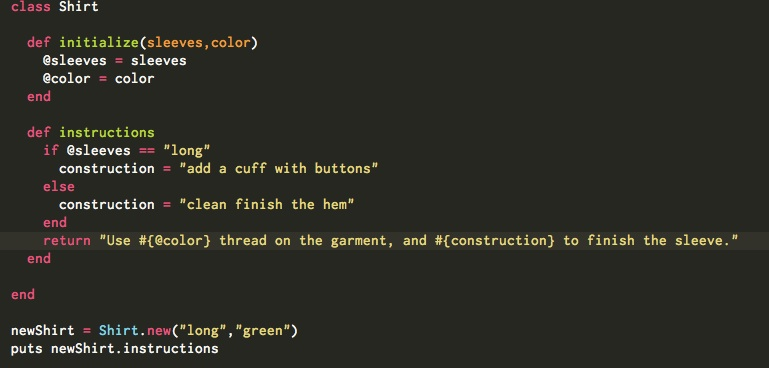

Working with Classes in Ruby
September 28, 2014
For this post, I'll use technical design for apparel as my the real world example of building a class in Ruby. Of course, this is a very simplified example. Let's say that I want to have a shirt produced in a factory. I have to provide exact instructions to the machine operator. It is not his or her job to make judgement calls about what the shirt looks like or how it should be constructed.
To start, will use the same main pattern pieces for each shirt. Every time I want to produce a new shirt, I cut out the pieces from a pattern. The pattern corresponds to a class, with the cut out pieces being an instance of this class. Now, I have choices to make about my shirt. For example, will it have short or long sleeves? If I go with long sleeves, what technique will I use to finish them? Secondly, what color will the shirt be?
The decisions that I make about the shirt's sleeves and color correspond to the instance variables of a class, which hold what is called state information about a class instance. Now, I have to decide how I will construct the shirt, what sewing techniques I'll use. The construction methods used to construct the shirt correspond to instance methods in a class.
Let's take a look at how this might play out in Ruby. I want to produce an instruction sheet for the garment factory. To keep the code short, I am giving instructions about two things: how to proceed if the shirt has long or short sleeves, and what color thread to use based on the color of the shirt.
I start off by defining a class called Shirt. Next, I create a method called initialize. This method runs every time I create a new instance of class Shirt. Since this class is pretty simple, all I'm doing in the initialize method is saying that my I will be specifying the sleeve length and color of my shirt.
Next, I want to create some instructions based on decisions I've made about the sleeves and color of the shirt. The instructions method creates the instructions that the sewing operator will use to make the shirt. In this method, I'm also telling the factory to use thread the same color as the shirt.
At the very bottom of the code, I create a new instance of the shirt, called newShirt. I have decided that my shirt will have long sleeves and will be green in color. The last thing that I do is call the instructions method on this new instance of shirt. When I do this, the program generates my woefully inadequate sewing instructions based on the options I've chosen for the shirt: long sleeves and the color green.
My output would look like this:
Use green thread on the garment, and add a cuff with buttons to finish the sleeve.
You can see that the @color and construction variables have been replaced with the values I've supplied in the initialize method, for the color. Note that the construction variable does not have an @ in front of it. This is because we do not need to refer to it outside of this method. The @color variable, meanwhile, is referenced throughout the class, and the @ means that it will be recognized anywhere within that scope.